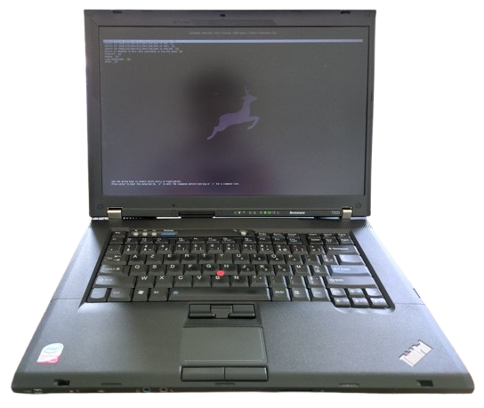

About
Hacking movies have always impressed me. When I was around 12, I decided to take cybersecurity seriously and quickly delved into Linux. I have always been interested in problem-solving, and this passion led me to cybersecurity. Learning how to harden devices and ensure system security captivated my interest.
Skills
Projects
S2 python game project
In the context of my second semester, I am currently working with a team of five to create a 1v1 fighting game. I serve as the team lead and manage the networking aspects using Pysocket. This experience has deepened my understanding of how networking functions at a fundamental level, which I find exhilarating. My current obsession is optimizing the network to achieve the lowest latency possible.
Libreboot Thinkpad - Hardware Hacking
I installed Libreboot on a T500. I had to disassemble the whole laptop and then flash the microchip with flashrom to modify the BIOS. Libreboot enables me to have a fully open-source laptop, have a quicker BIOS boot, and eventually remove the Intel Management Engine for better privacy. It was a really interesting and fun project that took me 1 week with 2 hours per day of work because I didn't know anything about BIOS beforehand. I learned a lot and now I better understand how computers work at a low level. It's really interesting to disassemble and reassemble a laptop completely because you need to take care that you don't forget anything. I did this to learn more about hardware since I usually work more with software. And I'm really happy I did it!
Homelab on a T420
I built a homelab on a T420 to learn development and server management. Through this project, I gained experience with Python and Shell scripting while learning essential server administration concepts including Docker containerization, firewall configuration, and networking. This hands-on approach allowed me to bridge the gap between software development and system administration. In this homelab I hosted:
- -Nextcloud to replace Google Drive
- -Syncthing to sync all my files between my devices, for instance my music. This homelab served as a central backup
- -WireGuard to be able to access my homelab from anywhere by creating my own VPN
- -QBittorrent to host a node to seed the ArchLinux ISO
Contact
I'm always open to discussing new opportunities and interesting projects.